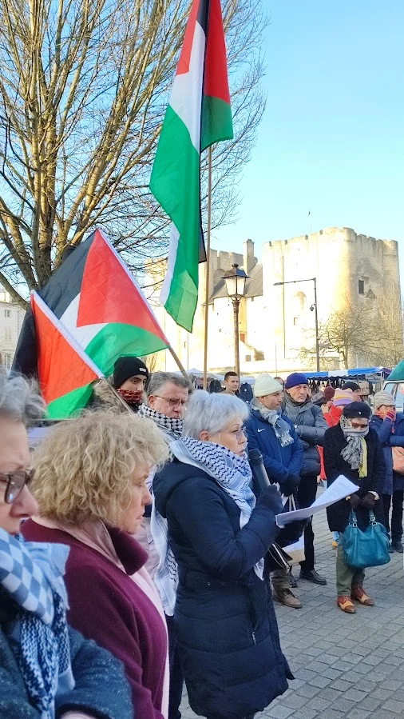
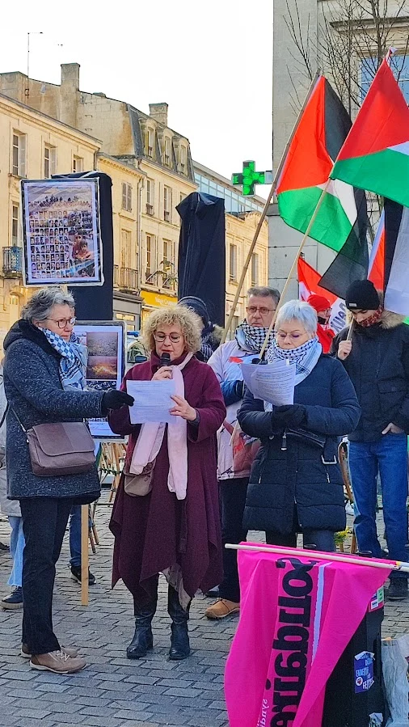
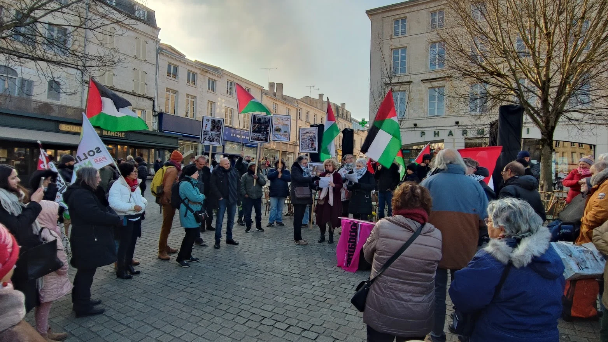
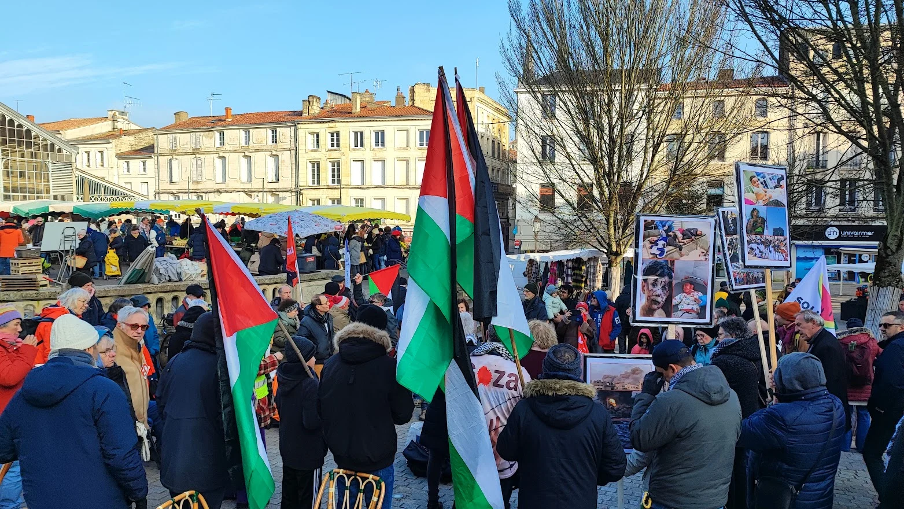
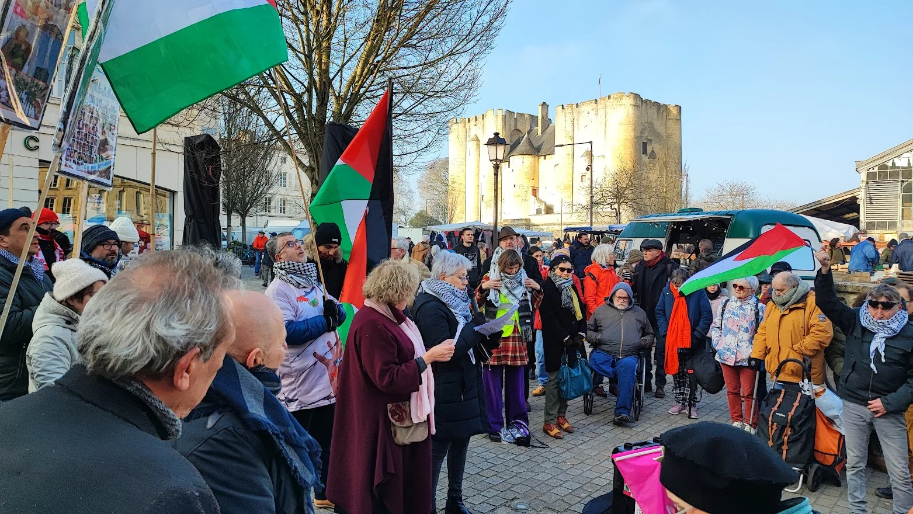

Compte rendu fédéral
À Niort, rassemblement et marche pour un cessez-le-feu durable
Date indiquée par Facebook · 13 janvier 2024
Repères éditoriaux
Avec le Collectif Palestine 79, nous avons défilé pour exiger un cessez-le-feu durable, l’arrêt des bombardements et des déplacements forcés et la levée du blocus de Gaza. Le compte rendu du 13 janvier et cinq photos documentent la mobilisation.
Texte conservé avec la publication
Halte aux massacres à Gaza et en Cisjordanie !
A l'appel du Collectif Palestine 79 dont le PCF79 est membre, un rassemblement et une marche ont eu lieu pour appeler la communauté internationale à agir avec rapidité et intensité, en vue d’obtenir un cessez-le-feu durable.
Le Collectif Palestine 79 :
- Demande un cessez-le-feu total et permanent dans la Bande de Gaza, l’arrêt définitif des bombardements, des offensives terrestres et des déplacements forcés de populations, ainsi que la levée durable du blocus,
- Condamne les crimes de guerre commis par des commandos du Hamas, le 7 octobre contre des civils israéliens et les crimes de guerre qui continuent d’être commis par l’Etat d’Israël contre les habitants de Gaza
- Demande la protection de la population palestinienne de Cisjordanie y compris Jérusalem-Est.
- Exige que la France et l’Union européenne s’engagent activement et sans ambiguïté pour le cessez-le-feu, y compris en passant par des sanctions contre l’État d’Israël.
- Exige la libération de tous les otages et de tous les prisonniers politiques palestiniens et du gouvernement français qu’il fasse pression sur Israël pour le respect de tous les droits du peuple palestinien et la reconnaissance de son droit inaliénable à l'autodétermination !
- Déclare qu’une paix juste et durable entre Israéliens et Palestiniens ne sera possible qu’avec l’arrêt de la colonisation et la fin de l’occupation israélienne, dans le cadre de la reconnaissance des droits fondamentaux du peuple palestinien : autodétermination et création d’un état indépendant et souverain.
#Gaza
#CessezLeFeu
#Palestine





Sources
Archive rouge · export Facebook · AR-0002-FB-01501
À lire aussi · À Niort, l’appel du Collectif Palestine 79 à se rassembler le 13 janvier